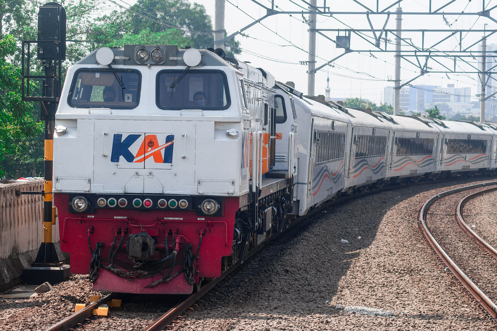
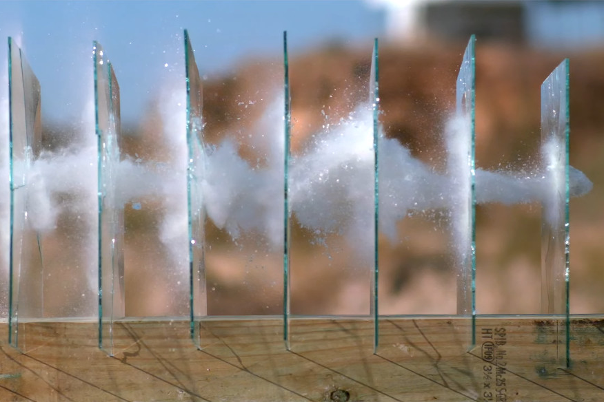

# Momentum Linear dan Tumbukan --- - Momentum dan Impuls - Hukum Kekekalan Momentum - Koefisien Restitusi dan Jenis-jenis Tumbukan --- ### Momentum dan Impuls #### Pengertian Momentum - Untuk memahami pengertian momentum, lihat gambar di bawah ini! <div class="r-hstack justify-center">   </div> --- #### Pengertian Momentum - Manakah yang lebih sulit dihentikan kereta api yang berat dan bergerak perlahan, katakanlah 1 m/s atau peluru yang ringan tetapi bergerak cepat, katakanlah 100 m/s? --- #### Pengertian Momentum - Manakah yang lebih sulit dihentikan kereta api yang berat dan bergerak perlahan, katakanlah 1 m/s atau peluru yang ringan tetapi bergerak cepat, katakanlah 100 m/s? - Ternyata dua-duanya sama-sama sulit dihentikan. - Ukuran tingkat kesulitan sebuah benda dihentikan geraknya inilah yang kita sebut sebagai *momentum*. --- #### Pengertian Momentum - Secara matematis, momentum *p* adalah hasil kali massa *m* dan kecepatannya *v*. ###### $$\vec{p}=m\vec v$$ --- Keterangan: - *p* = momentum (kg m/s) - *m* = massa (kg) - *v* = kecepatan (m/s) - Catatan: momentum adalah **besaran vektor**. --- #### Pengertian Momentum - Semakin besar massa suatu benda, maka semakin besar momentumnya, dan semakin cepat gerak suatu benda, maka semakin besar pula momentumnya. - Misalnya, dengan kecepatan yang sama, jembatan yang tertabrak bus akan mengalami kerusakan lebih parah daripada jembatan yang tertabrak sepeda. Mobil dengan kecepatan tinggi akan lebih sulit dihentikan daripada mobil dengan kecepatan rendah. --- - Apabila terjadi tumbukan, mobil dengan kecepatan tinggi akan mengalami kerusakan lebih parah. Semakin besar momentum sebuah benda yang sedang melaju, semakin sulit untuk menghentikannya. --- #### Pengertian Impuls - Impuls (*I*) adalah perubahan momentum benda. Jika sebuah benda bergerak menjadi diam, maka momentumnya berubah dari nilai positif ke nol. Atau impulsnya bernilai negatif. Demikian pula sebaliknya. - Secara matematis, ###### $$\vec{I}=\Delta\vec p=\vec p_2-\vec p_1=m(\vec v_2-\vec v_1)$$ --- - Bagaimana hubungan momentum dan gaya? - dari Hukum Newton II, kita peroleh $$\vec F=m\vec a$$ - dari persamaan GLBB, kita peroleh $$\vec a=\frac{\Delta v}{\Delta t}=\frac{v_2-v_1}{\Delta t}$$ --- $$\vec F=m\vec a$$ $$\vec F=m\frac{v_2-v_1}{\Delta t}$$ $$\vec F\Delta t=m(v_2-v_1)$$ ###### $$\vec F\Delta t=I$$ --- - *F* adalah total gaya luar yang bekerja pada benda. - Dari persamaan tersebut tampak hubungan momentum dengan gaya yaitu bahwa gaya luar menghasilkan perubahan momentum benda. - Gaya dapat menghasilkan percepatan. Percepatan sama dengan perubahan kecepatan. Terjadi perubahan kecepatan berarti perubahan momentum benda. - Impuls (perubahan momentum) sama dengan rata-rata gaya yang bekerja pada benda setiap detiknya. --- #### Hukum Kekekalan Momentum - Pada semua perisitiwa tumbukan/tabrakan berlaku hukum kekekalan momentum. - Hukum Kekekalan Momentum: >Jika tidak ada gaya luar yang bekerja pada benda, maka jumlah momentum sebelum tumbukan (*$\Sigma \mathbf p$*) sama dengan jumlah momentum setelah tumbukan (*$\Sigma \mathbf p'$*). --- - Secara matematis dirumuskan: $$\Sigma \mathbf{p}=\Sigma \mathbf{p'}$$ - Jika benda yang bertumbukan hanya ada dua maka berlaku: ###### $$\mathbf p_1+\mathbf p_2=\mathbf p_1'+\mathbf p_2'$$ --- Keterangan: - *p<sub>1</sub>* = momentum benda 1 sebelum tumbukan (kg.m/s) - *p<sub>2</sub>* = momentum benda 2 sebelum tumbukan (kg.m/s) - *p'<sub>1</sub>* = momentum benda 1 setelah tumbukan kg.m/s) - *p'<sub>2</sub>* = momentum benda 2 setelah tumbukan (kg.m/s) --- #### Koefisien Restitusi - Koefisien restitusi menyatakan ukuran elastisitas relatif tumbukan antara dua benda atau bisa disebut juga koefisien tumbukan, yang disimbolkan sebagai *e*. - Koefisien restitusi (*e*) adalah negatif perbandingan antara kecepatan relatif sesaat setelah tumbukan dengan kecepatan relatif sesaat sebelum tumbukan. - Nilai *e* antara nol sampai dengan 1. --- ###### $$e=\frac{\mathbf v_1'-\mathbf v_2'}{\mathbf v_2-\mathbf v_1}=-\frac{\mathbf v_2'-\mathbf v_1'}{\mathbf v_2-\mathbf v_1}$$ Keterangan: - *v<sub>1</sub>* dan *v<sub>2</sub>* = kecepatan benda 1 dan 2 sebelum tumbukan (m/s) - *v'<sub>1</sub>* dan *v'<sub>2</sub>* = kecepatan benda 1 dan 2 setelah tumbukan (m/s) --- #### Jenis-jenis tumbukan - Sesuai dengan nilai koefisien restitusinya, ada tiga jenis tumbukan: 1. **Tumbukan Lenting Sempurna:** - Jika nilai *$e=1$*, terjadi tumbukan lenting sempurna. - Pada tumbukan ini berlaku juga hukum kekekalan energi, karena tidak ada energi yang hilang, $EK=EK'$. Dengan demikian ada dua persamaan, yaitu Hukum Kekekalan Momentum dan Hukum Kekekalan Energi Kinetik. --- $$\begin{gather} \frac 1 2 m_1v_1^2+\frac 1 2 m_2v_2^2=\frac 1 2 m_1v_1'^2+\frac 1 2 m_2v_2'^2 \cr m_1v_1+m_2v_2=m_1v_1'+m_2v_2' \end{gather}$$ $$m_1(v_1^2-v_1'^2)=m_2(v_2'^2-v_2^2)\ (1)$$ $$m_1(v_1-v_1')=m_2(v_2'-v_2)\ (2)$$ --- Jika persamaan 1 dibagi dengan persamaan 2 didapatkan: $$(v_1+v_1')=(v_2'+v_2)$$ $$(v_1-v_2)=(v_2'-v_1')$$ ###### $$\frac{(v_2'-v_1')}{(v_1-v_2)}=e=1$$ --- 2. **Tumbukan Lenting Sebagian:** - Jika nilai *$e>0$* dan *$e<1$*, terjadi tumbukan lenting sebagian. - Pada tumbukan ini, sebagian energi berubah menjadi panas. 3. **Tumbukan Tidak Lenting:** - Jika nilai *$e=0$* , terjadi tumbukan tidak lenting. - Pada tumbukan ini, sebagian energi berubah menjadi panas. --- $$\frac{(v_2'-v_1')}{(v_1-v_2)}=e=0$$ $$v_1'-v_2'=0$$ ###### $$v_1'=v_2'$$ - Ini berarti *kecepatan akhir kedua benda sama* (kedua benda menyatu).